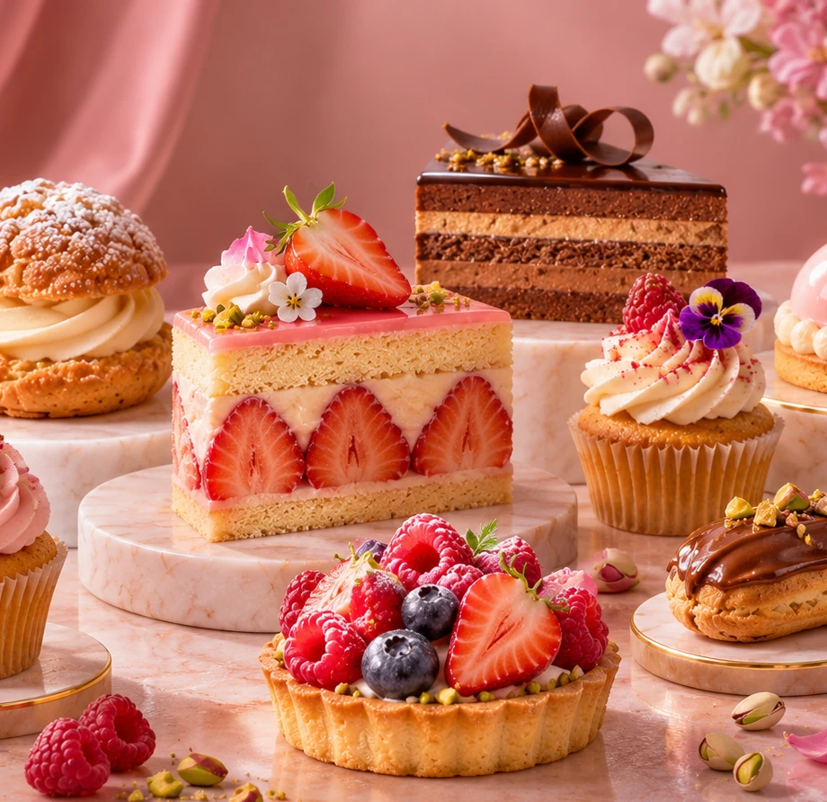
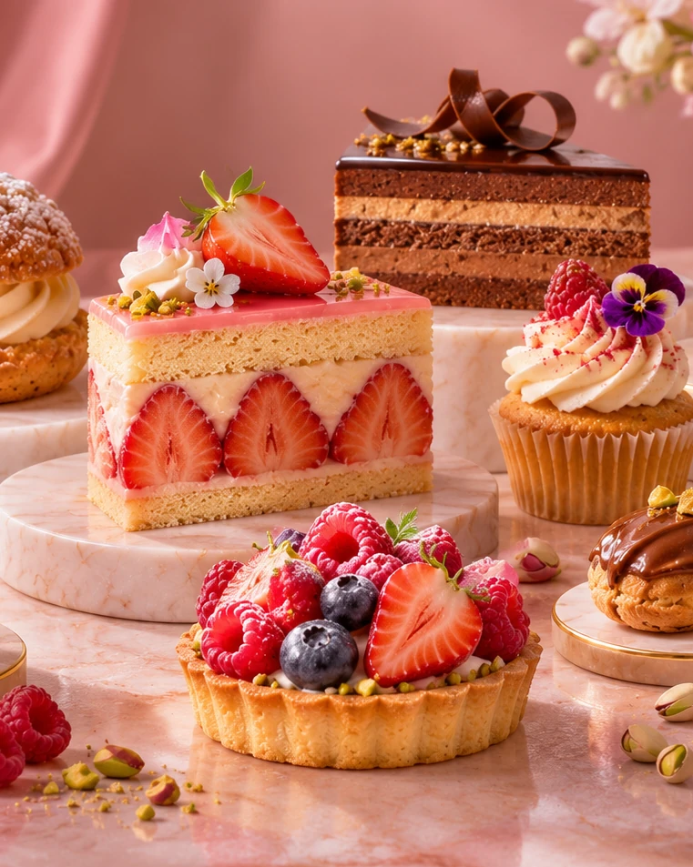

Sweet treats
Des pâtisseries à savourer
Cupcakes, créations gourmandes et douceurs selon les propositions du moment.
Explorer les douceurs ↗Une pause gourmande au cœur de Carcassonne : cupcakes, pâtisseries, boissons et un salon de thé au charme singulier.
Projet de refonte · Contenus et disponibilités à valider avec l'entreprise
Sonia Houacine, pour Meery Cake, a été récompensée lors des Trophées du Commerce 2025 de la CCI Aude.
Voir le dossier officiel de la CCI ↗Au cœur de Carcassonne, Meery Cake cultive le plaisir de s’arrêter pour une douceur. Pâtisseries, boissons et idées de gâteaux personnalisés composent un univers au charme délicatement rétro.
Un moment simple, une touche de gourmandise.
Illustrations originales générées par IA pour cette maquette. Elles ne représentent pas nécessairement les produits ou le salon réels.

Que vous veniez pour une pause sucrée, un brunch ou simplement un moment au salon, il y a toujours une bonne raison de découvrir Meery Cake.

Cupcakes, créations gourmandes et douceurs selon les propositions du moment.
Explorer les douceurs ↗Des formules recensées dans notre carte, à confirmer auprès du salon pour les jours et tarifs.
Demander une table ↗Un univers pastel, une atmosphère chaleureuse et l'envie de prolonger la pause.
Découvrir le salon en images ↗Un aperçu du salon et de ses créations, rassemblé à partir de illustrations originales générées pour cette maquette.
Visuels générés par IA pour illustrer l’ambiance du salon. Ils ne montrent pas les produits ni l’établissement réel.
Un projet, une question ou simplement l'envie d'une pause gourmande ? Voici les coordonnées indiquées dans les sources publiques.
6 rue Victor Hugo
11000 Carcassonne, France
Horaires : à confirmer directement auprès du salon.
Google Maps est intégré pour faciliter la recherche de l'adresse ; l'ouverture de la carte peut communiquer des informations techniques à Google.